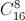

How many ways can I schedule the first round of the Russian Football Championship, in which 16 teams are playing? $($It is important to note who is the host team$)$.
You can arrange 16 teams in 16 places by 16! methods, then break them into pairs 1-2, 3-4, ..., 15-16 $($teams with odd numbers are the hosts, and with even numbers – guests$)$. But in this case, each pairing occurs 8! times $($the number of ways of rearranging 8 pairs in order$)$. Thus, the number of schedules for the first round is 16!/8!.
There are  are ways to choose 8 teams that will play on their field. For each of these ways there are 8! ways to "arrange" the 8 remaining teams as their opponents. In total, there are $ \times 8$! ways.
16!/8! = $2^8 \times 15$!! ways.